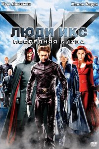

Բարի Գալուստ իմ առաջին էջ
+37498941429
+37491111294
Люди Икс 3: Последняя битва (2006)
После смерти Джин Грей в команде Чарльза Ксавьера намечается раскол. Скотт «Циклоп» Саммерс переживает из-за смерти своей возлюбленной и отправляется к месту ее гибели, где она воскресает на его глазах в облике Темного Феникса. Теперь Джин Грей – особый вид мутанта, в своей эволюции ушедшего еще дальше своих товарищей. Пытаясь разобраться в том, кем или чем теперь является Джин, команда Людей Икс под предводительством Ксавьера понимает, что их подруга представляет опасность для всего человечества.
Как предотвратить трагедию? Возможно, человечество спасет особое лекарство, сводящее на нет мутации. Возможно, конфликт будет решен в пользу команды Магнето, стремящейся покорить людей и установить власть мутантов. А может быть, Люди Икс все-таки найдут способ установить мир и сохранить человеческие жизни. В последней битве между тремя сторонами – двумя командами мутантов и обычными людьми – этот вопрос будет решен раз и навсегда.
Год выпуска: 2006
Страна: США
Жанр: фантастика, боевик,приключени
Перевод: Дублированный
Продолжительность: 01:43:31
Премьера (РФ): 01 июня 2006
Режиссер: Брайан Сингер
В ролях: Хью Джекман, Патрик Стюарт, Иэн МакКеллен, Фамке Янссен, Джеймс Марсден, Холли Берри, Анна Пэкуин, Шон Эшмор, Ребекка Ромейн, Тайлер Мэйн